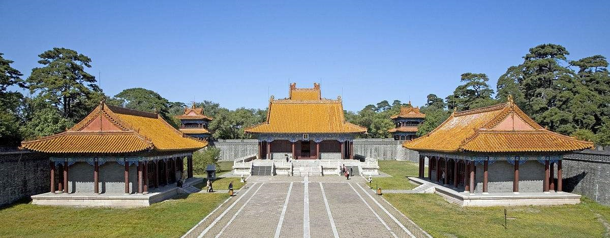
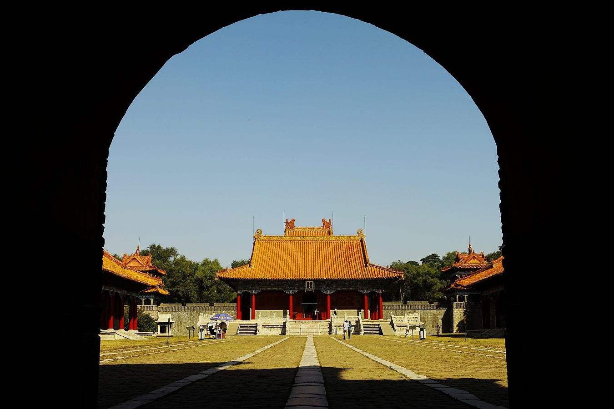
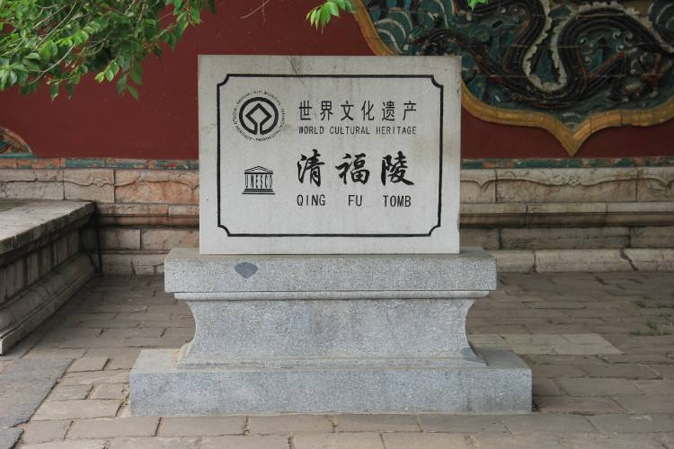

清福陵

清福陵是清太祖努尔哈赤的陵墓，因地处沈阳东郊，故又称东陵。为盛京三陵之一。
另有努尔哈赤的后妃叶赫那拉氏、博尔济吉特氏等人葬于此处。天聪三年（1629年）选定在盛京的东北郊外营建陵墓。
同年将皇太极生母叶赫那拉氏的墓从东京杨鲁山迁来此处。
初建时，只称作“先汗陵”或“太祖陵”，崇德元年（1636年）定名为“福陵”，寓意大清江山福运长久。
陵墓到顺治八年（1651年）基本建成，后来在康熙和乾隆年间又续有增建。
1988年，福陵被中华人民共和国国务院公布为第三批全国重点文物保护单位之一。
2004年，包括福陵在内的盛京三陵作为明清皇家陵寝的拓展项目被列入世界文化遗产。
历史
- 始建
福陵是清太祖努尔哈赤及其皇后叶赫那拉氏陵寝，因坐落在沈阳市东北11公里处。
故又称东陵，是著名的世界文化遗产。努尔哈赤是满族人，姓爱新觉罗，
受明册封为女真族（满族前身）建州部首领，后来统一了女真族各部，建立了金（史称后金）政权。
他精通汉蒙文字，不仅在军事上颇有建树，而且创立了八旗制度和满族文字，
在政治上和文化上也颇有建树，为满族的初期发展作出了卓越贡献，成为满族的民族英雄，死后葬于福陵。
其子皇太极建立清政权后，他被追尊为清太祖。
福陵始建于后金天聪三年（1629年）．竣工于清顺治八年（1651年），经康熙、乾隆两帝增建，方具今日规模

- 文化遗产
方城北面是宝城，也称月牙城，正中突起的土堆即是宝顶，其下的地宫埋藏着努尔哈赤和叶赫纳喇氏的棺木及骨灰。
福陵规模尽管比昭陵小，然而由于它有上列两大特点，再加之环境优美，仍独具魅力。
所以，人们游罢昭陵，依然能兴致勃勃地继游福陵，而且不会产生雷同感。
2004年7月，联合国教科文组织第28届世界遗产委员会会议，批准了中国的沈阳福陵作为明清皇宫文化遗产扩展项目列入《世界遗产名录》

简介
福陵后倚天柱山，前临浑河，万松耸翠，大殿凌云，占地19.48万平方米。
福陵中利用地形修筑的"一百零八蹬"（108级台阶），象征着三十六天罡和七十二地煞，是福陵的重要标志。
福陵公园又称“东陵”，是清太祖努尔哈赤及其孝慈高皇后叶赫纳喇氏的陵墓。
与沈阳市的昭陵、新宾县永陵合称“关外三陵”、“盛京三陵”。东陵公园始建于公元1629年 （天聪三年），
到公元1651年基本建成。后经清朝顺治、康熙、乾隆年间的多次修建，形成了规模宏大、设施完备的古代帝王陵墓建筑群。
距今已有三百六十余年历史。崇德元年（公元1636年）大清建国，定陵号为“福陵”，
1929年被当时奉天当局辟福陵为东陵公园，1963年被列为辽宁省重点文物保护单位，1988年国务院将其列为国家重点文物保护单位。
版权信息：© Design and Code by 田纪海、解晓鹏、王苏